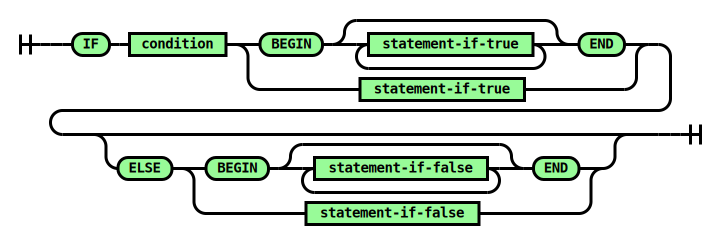

IF Statement
Takes one code path or the other based on an SQL expression. The condition expression must evaluate to the integer 0 or 1.
Syntax

Parameters
- condition: integer (0-1)
If this expression evaluates to 1, then the statement-if-true statements
are executed. Otherwise, the statement-if-false statements are
executed.
- statement-if-true: statement
The statements to execute if the condition is 1. If more than one statement-if-true statement is desired, the BEGIN and END
keywords must be used.
- statement-if-false: statement
The statements to execute if the condition is 0. If more than one statement-if-false statement is desired, the BEGIN and END
keywords must be used.
Example
DECLARE PARAMETER @foo = 111;
DECLARE PARAMETER @bar = 222;
-- The simplest IF tests a condition and executes a single
-- statement if true.
IF 1 -- Always true.
PRINT 'Hi'; -- Always prints.
IF @foo = 123
PRINT 'Hi'; -- Prints or not depending on @foo.
-- An ELSE block will run if the IF condition is false.
IF @foo > @bar
PRINT 'Foo';
ELSE
PRINT 'Bar';
-- Check a series of conditions with ELSE IF.
IF @foo = 111
PRINT 'First condition'
ELSE IF @bar = 111
PRINT 'Second condition'
ELSE IF @foo = 222 AND @bar = 222
PRINT 'Third condition'
ELSE
PRINT 'None of the above'
-- Add BEGIN and END to any block to execute multiple statements.
IF @foo = 111 BEGIN
PRINT 'Hello...'
PRINT 'World!'
END